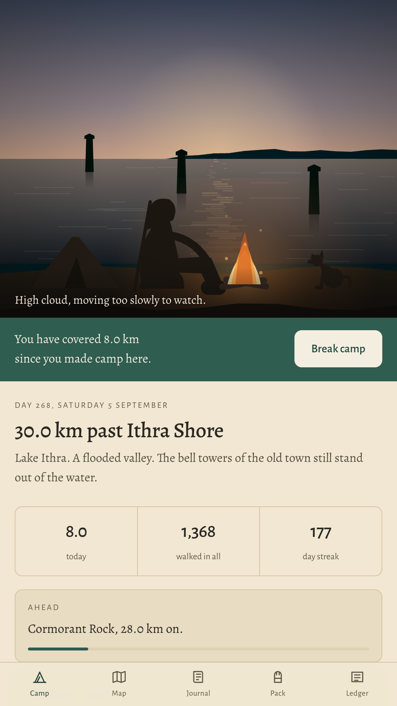
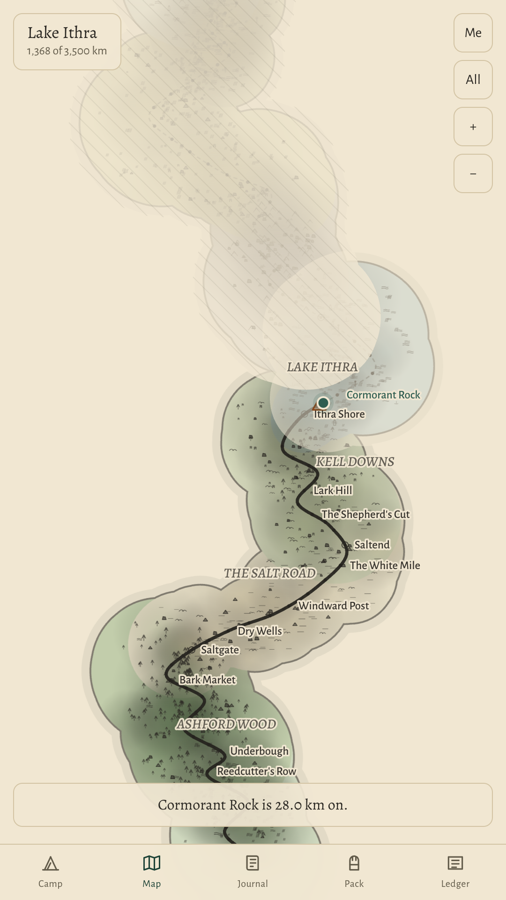
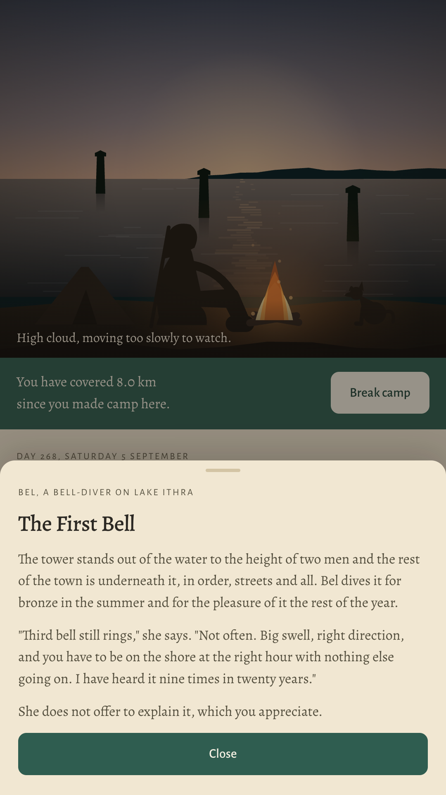
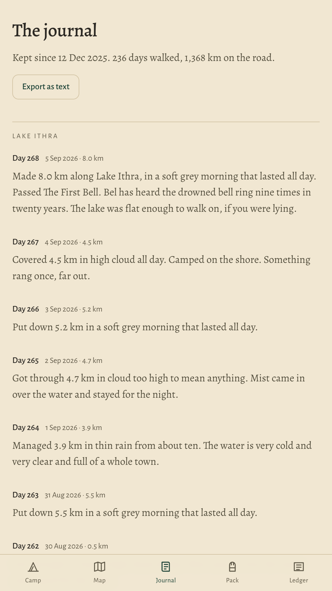
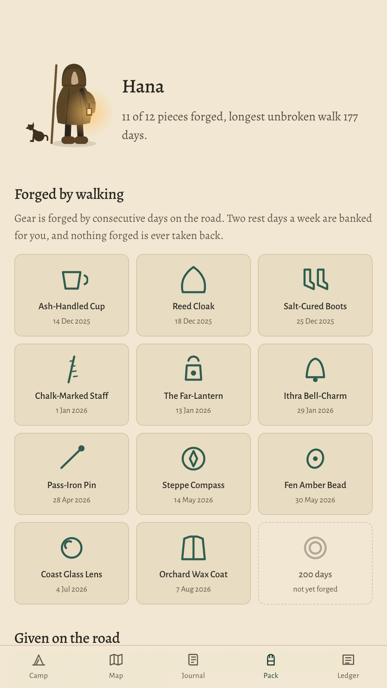

Your real walking carries a small hooded wanderer across a hand-drawn continent. Three thousand five hundred kilometres, eleven regions, and a road that actually ends.
Get it on Google Play Free and complete. Nothing to buy, no account, no adverts. Or walk it in your browser first.
A step counter resets at midnight. A road does not.
Rucksack takes the steps you were going to take anyway and spends them on distance. Nothing you walk is ever given back, and the map has an end you can reach.

Elsewhere is one road through eleven regions, drawn from ink and watercolour on the phone rather than shipped as pictures. Everything ahead of you sits under a cartographer's fog until your own feet lift it.
The daily ritual
Open the app in the morning and your wanderer has already moved. Break camp, and the journal writes the day down for you: the distance, the weather over Elsewhere, and whoever you ran into on the way.



A walking game only works if you trust its arithmetic, so all of it is on one screen inside the app and all of it is here.
1,300 steps make one kilometre. It is a flat rate. There is no multiplier, no bonus week and nothing that can raise it, because the road is the only thing being measured.
A single day converts at most 40 kilometres. A walking marathon still counts in full. A phone that spent the afternoon in a car mostly does not.
Android's own step counter reports one number: steps since the phone last started. Rucksack reads it when you open the app and banks whatever is new, so the walking counts while the app is closed. If the phone restarts, the steps between the restart and your next visit are lost, and the ledger says so instead of guessing.
Rucksack does not request the location permission and never uses GPS. The weather at your camp belongs to Elsewhere, worked out from the date and the region you are standing in, which is exactly why it needs no forecast and no position.
On a device with no step sensor, or if you would rather not grant the permission, you write today's number into the ledger yourself and the road moves just the same.
Two rest days a week are banked for you automatically, so a streak survives an ordinary life. Gear is forged, not rented, and a broken run never removes anything.
Rucksack does not declare the internet permission, so Android will not let it open a connection at all. Nothing you walk can be uploaded.
There is no shop and no in-app purchase. Selling kilometres would empty the only thing the app is about.
No account, no email, no profile. The journey belongs to the phone it was walked on.
No advertising SDK, no analytics, no crash reporter, no advertising ID.
There is no notification of any kind. The app is worth opening in the morning or it is not, and a reminder would not change which.
All eleven regions, all forty one encounters and all twelve pieces of gear are in the free app. There is no second half to buy.
Most walkers take a year. The road does not mind.
Get it on Google Play You will also meet a dog. He can be yours forever. It takes three days of walking.